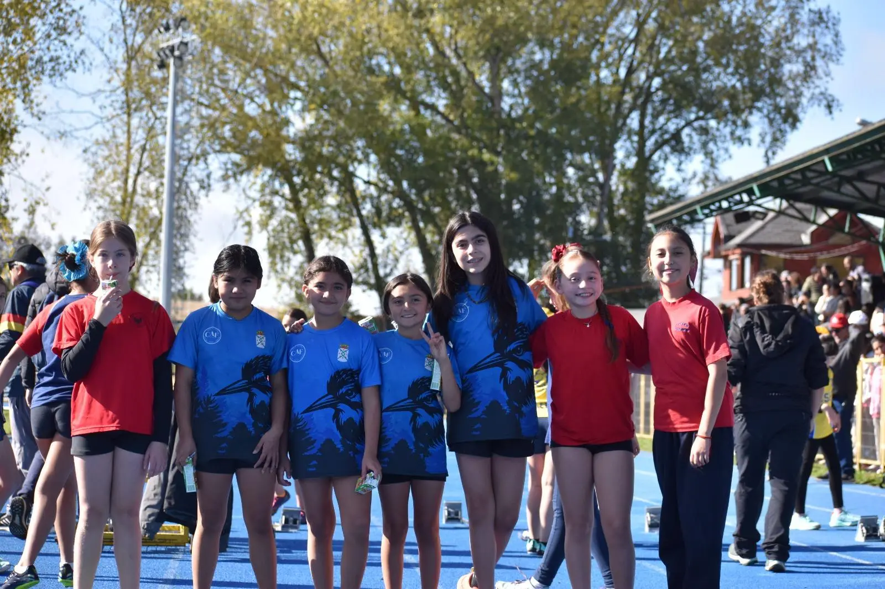
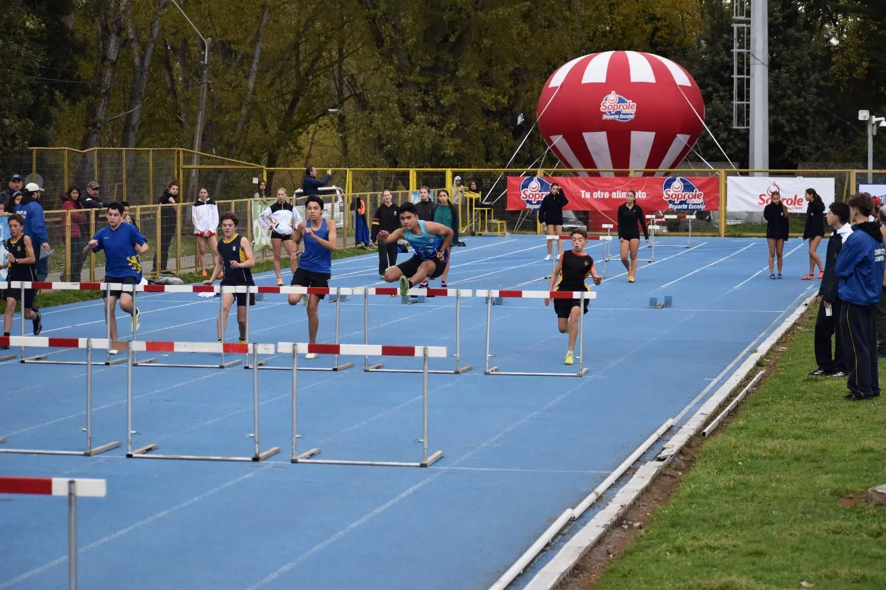
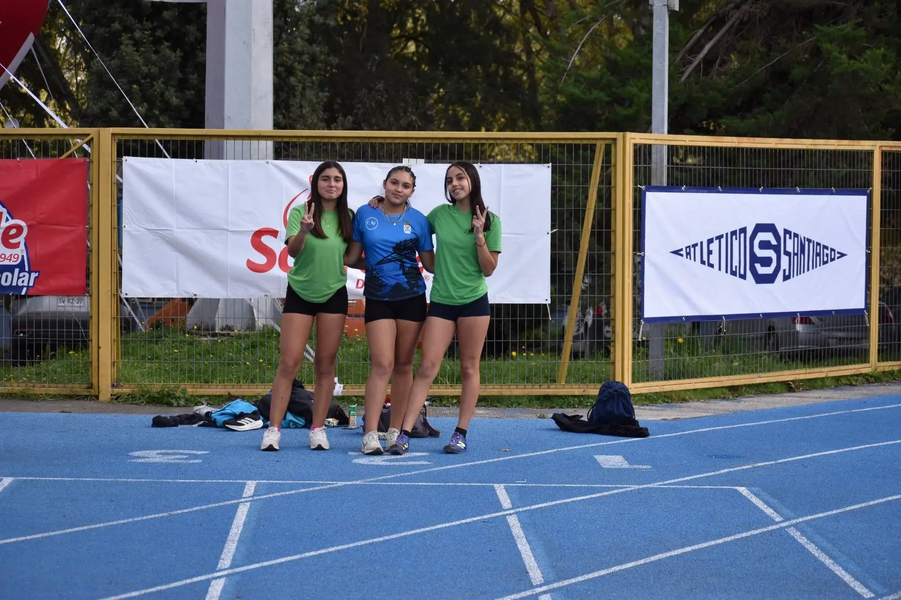

Lluvia de podios y récord histórico en el Soprole de Osorno
11 y 12 de Abril, 2026Los pasados 11 y 12 de abril, la pista atlética de la Villa Olímpica de Osorno se tiñó con los colores del Club Atlético CAF de La Unión. En una jornada marcada por el alto nivel competitivo, nuestra delegación de más de 40 atletas demostró por qué somos el referente del atletismo en la Región de Los Ríos, logrando una de las actuaciones más sólidas de la temporada.

La Consagración de la Escuela Radimadi
Uno de los puntos más altos del fin de semana fue la actuación de la Escuela Radimadi. El equipo de relevos no solo se llevó el metal dorado, sino que lo hizo con una autoridad aplastante. En la prueba de 4x200 metros, los jóvenes atletas detuvieron el cronómetro estableciendo un nuevo récord de campeonato, una hazaña que puso de pie a toda la grada. Asimismo, se coronaron campeones en la posta 5x80 metros categoría Infantil Varones, demostrando una coordinación y técnica que rozan la perfección.
Franco Sotelo: La Velocidad de Río Bueno
Representando al Colegio Santa Cruz de Río Bueno, Franco Sotelo se convirtió en una de las figuras individuales del certamen. Con una explosividad envidiable, Sotelo conquistó el primer lugar en los 100 metros planos Intermedia y repitió la hazaña en los 300 metros planos. No conforme con los oros, también subió al podio con una medalla de plata en el Salto Largo, cerrando un fin de semana redondo para el deporte riobuenino.

Resultados Destacados de la Delegación
| 1° Lugar | Franco Sotelo (Col. Santa Cruz R.B) | 100m Planos e Intermedia |
| 1° Lugar | Franco Sotelo (Col. Santa Cruz R.B) | 300m Planos |
| 2° Lugar | Franco Sotelo | Salto Largo Intermedia |
| 1° Lugar | Escuela Radimadi | Posta 4x200 (¡RÉCORD!) |
| 1° Lugar | Escuela Radimadi | Posta 5x80 Infantil Varones |
| 2° Lugar | Anais Vargas | 800m Planos |
| 2° Lugar | Jans Antillanca (Liceo Industrial R.F.) | 110m Vallas Superior |
| 3° Lugar | Alfonso Manríquez (Col. Alemán L.U) | Lanzamiento Pelotita |
| 3° Lugar | Federico Zwanzger (Col. Alemán L.U) | 800m Planos Intermedia |
| 3° Lugar | Elias Olivera (Liceo RAAC L.U.) | 110m Vallas Intermedia |
| 3° Lugar | Vicente González | 80m Vallas Infantil |
| 3° Lugar | Isabela Robert (Col. Alemán L.U) | 60m Planos |
Un Proyecto Educativo y Deportivo Sin Fronteras
El éxito del CAF radica en su capacidad de integrar a diversos establecimientos educacionales bajo una misma bandera. Destacamos la participación de alumnos del Liceo Industrial Ricardo Fenner Ruedi, el Liceo Rector Abdón Andrade Coloma (B-12), el Colegio Alemán y la ya mencionada Escuela Radimadi, entre otros. Esta mezcla de talentos de La Unión y Río Bueno fortalece el tejido social y deportivo de nuestra zona.

El Motor del Club: Cuerpo Técnico y Familia
Detrás de cada medalla hay horas de entrenamiento y logística. Queremos destacar de manera especial la labor del Profesor Nicolás Cañoles, quien lidera este proyecto con una dedicación incansable. Su presencia constante en la pista, orientando a cada niño antes de su prueba, es la pieza clave para la confianza de nuestros atletas.
De igual forma, el club extiende un profundo agradecimiento a los padres y apoderados. Su compromiso al trasladar a los niños, alentarlos desde la galería y apoyar cada iniciativa del CAF es lo que permite que una delegación de 40 personas pueda viajar y competir dignamente. El atletismo es un deporte individual en la pista, pero un esfuerzo familiar en la vida diaria.
Nota redactada por: Equipo de Comunicaciones CAF 2026
La Unión, Chile. Fomentando el talento y los valores del deporte escolar.